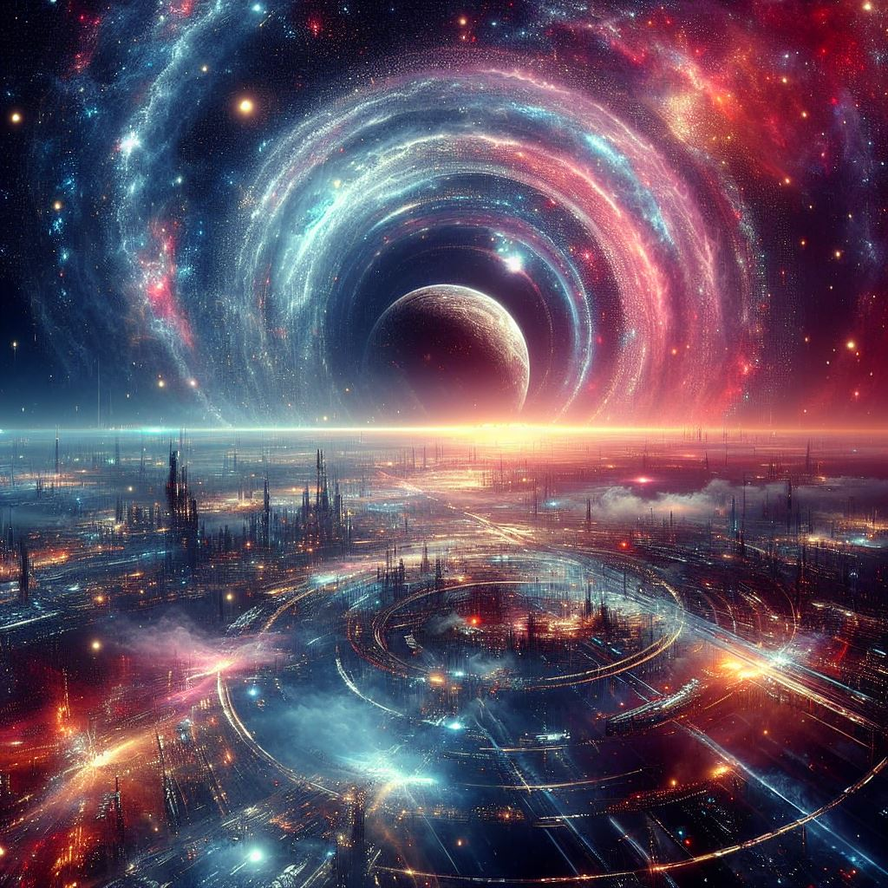
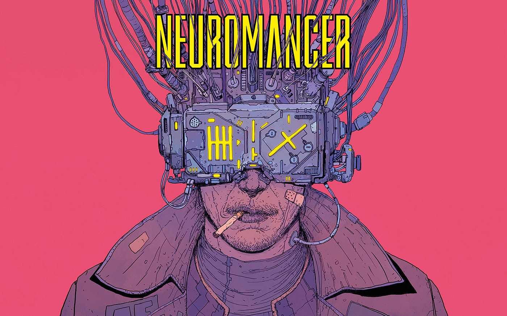

Fronteiras do Desconhecido: Uma Viagem pela Ficção Científica
Exploração Espacial: O Infinito e Além
A humanidade sempre olhou para as estrelas com curiosidade e desejo de explorar. A ficção científica nos permite imaginar como poderia ser essa jornada pelo cosmos, superando as fronteiras do que é conhecido e adentrando o território do que poderia ser.

Tecnologia Futurista: Invenções que Moldam o Amanhã
De inteligências artificiais a viagens no tempo, a ficção científica explora tecnologias que ainda não existem, mas que poderiam revolucionar nossa existência. Essas narrativas nos fazem questionar não apenas o que é possível, mas também as implicações morais e éticas dessas invenções no futuro da humanidade.
Livros de Ficção Científica que Você Precisa Ler
- "Duna" de Frank Herbert - Uma crônica épica de política, religião e poder no vasto deserto de um planeta distante.
- "O Guia do Mochileiro das Galáxias" de Douglas Adams - Uma aventura cósmica repleta de humor e sátira.
- "Neuromancer" de William Gibson - Um romance seminal que introduziu o conceito de ciberespaço e cyberpunk à ficção científica.
- "Fundação" de Isaac Asimov - Uma saga épica que explora a queda e a ascensão de civilizações ao longo de milênios, baseada na ideia da psicohistória.
- "Snow Crash" de Neal Stephenson - Uma mistura de cyberpunk, história e cultura pop, este livro oferece uma visão única e acelerada de um futuro distópico.

Neuromancer - William Gibson
Filmes de Ficção Científica que Marcaram Épocas
- "Blade Runner" - Uma reflexão profunda sobre inteligência artificial, memória e identidade.
- "Interestelar" - Uma jornada emocionante através do espaço e tempo, explorando a relação entre pais e filhos sob circunstâncias extremas.
- "2001: Uma Odisseia no Espaço" - Dirigido por Stanley Kubrick e baseado em uma história de Arthur C. Clarke, este filme é aclamado por suas visuais deslumbrantes, trilha sonora icônica e exploração filosófica da evolução humana e da inteligência artificial.
- "Matrix" - Dirigido pelos irmãos Wachowski, este filme revolucionou a ficção científica com sua visão distópica de uma realidade simulada e sua influência cultural duradoura.
- "Alien, o Oitavo Passageiro" - Dirigido por Ridley Scott, este filme combina elementos de ficção científica e horror para criar um clássico do cinema, apresentando uma das criaturas mais icônicas do gênero.
- "De Volta para o Futuro" - Esta trilogia dirigida por Robert Zemeckis é um clássico instantâneo, combinando aventura, viagem no tempo e humor em uma narrativa envolvente e divertida.
- "Star Wars" (Guerra nas Estrelas) - Criado por George Lucas, este épico espacial tornou-se uma das franquias mais populares e influentes da história do cinema, definindo padrões para filmes de ficção científica e fantasia por décadas.
- "A Origem" - Dirigido por Christopher Nolan, este filme desafia as convenções do gênero com sua trama intricada sobre a manipulação da mente e da realidade, oferecendo uma experiência cinematográfica emocionante e intelectualmente estimulante.

Star Wars - George Lucas
Jogos de Videogames Mais Populares de Ficção Científica
- "Cyberpunk 2077" - Um RPG de ação de mundo aberto que se passa em Night City, uma metrópole futurista onde os jogadores assumem o papel de um mercenário em busca de um implante único que concede imortalidade. O jogo explora temas de alta tecnologia, corpo cibernético, desigualdade social e corrupção corporativa em um mundo cyberpunk vibrante e imersivo.
- "Mass Effect" - Uma série de RPGs de ação que se passa em uma vasta galáxia, explorando temas de diplomacia intergaláctica, política, ética e combate.
- "Halo" - Uma série de jogos de tiro em primeira pessoa que segue as aventuras do Master Chief, um supersoldado, em sua luta contra uma raça alienígena conhecida como Covenant.
- "Metroid" - Uma série de jogos de ação e aventura que segue a caçadora de recompensas Samus Aran em suas missões para derrotar alienígenas hostis e descobrir segredos intergalácticos.
- "Portal" - Uma série de quebra-cabeças em primeira pessoa que desafia os jogadores a usarem portais de teletransporte para resolver desafios complexos em instalações de pesquisa avançadas.
- "Half-Life" - Uma série de jogos de tiro em primeira pessoa que segue o cientista Gordon Freeman em sua luta contra alienígenas invasores e forças militares corruptas.
- Fallout" - Uma série de RPGs de ação que se passa em um mundo pós-apocalíptico, explorando temas de sobrevivência, moralidade e reconstrução da sociedade após uma guerra nuclear.

Cyberpunk 2077 - CD Projekt Red (2020)